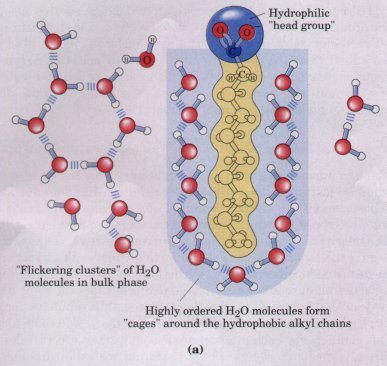
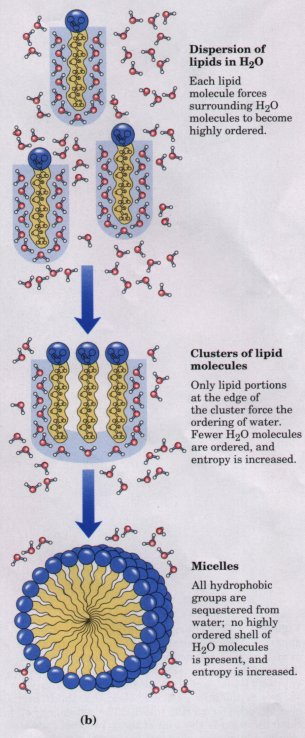
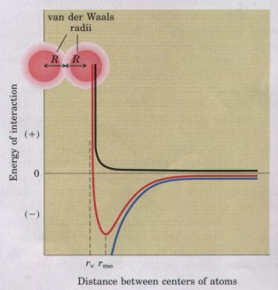
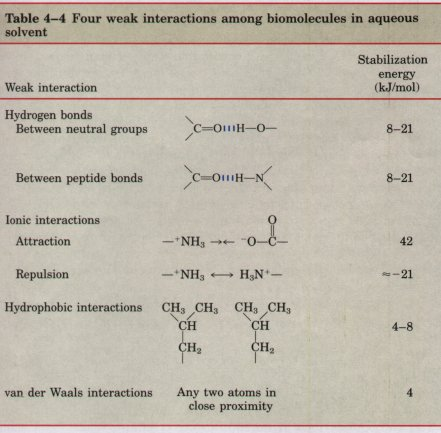
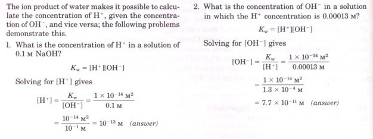
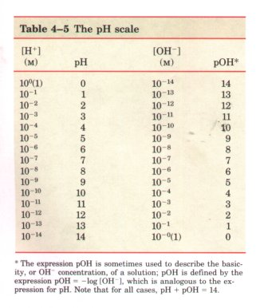
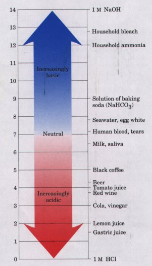

| Keq = | [C][D] |
| [A][B] |
When water is mixed with a hydrocarbon such as benzene or hexane, two phases form; neither liquid is soluble in the other. Shorter hydrocarbons such as ethane have small but measurable solubility in water. Nonpolar compounds such as benzene, hexane, and ethane are hydrophobic-they are unable to undergo energetically favorable interactions with water molecules, and they actually interfere with the hydrogen bonding among water molecules. All solute molecules or ions dissolved in water interfere with the hydrogen bonding of some water molecules in their immediate vicinity, but polar or charged solutes (such as NaCl) partially compensate for lost hydrogen bonds by forming new solute-water interactions. The net change in enthalpy (ΔH) for dissolving these solutes is generally small. Hydrophobic solutes offer no such compensation, and their addition to water may therefore result in a small gain of enthalpy; the breaking of hydrogen bonds requires the addition of energy to the system. Furthermore, dissolving hydrophobic solutes in water results in a measurable decrease in entropy. Water molecules in the immediate vicinity of a nonpolar solute are constrained in their possible orientations, resulting in a shell of
 highly ordered water molecules around each solute molecule. The number of water molecules in the highly ordered shell is proportional to the surface area of the hydrophobic solute. The free-energy change for dissolving a nonpolar solute in water is thus unfavorable: ΔG = ΔH- TΔS, where ΔH has a positive value, ΔS a negative value, and thus ΔG is positive. Amphipathic compounds contain regions that are polar (or charged) and regions that are nonpolar (Table 4-2). When amphipathic compounds are mixed with water, the two regions of the solute molecule experience conflicting tendencies; the polar or charged, hydrophilic region interacts favorably with the solvent and tends to dissolve, but the nonpolar, hydrophobic region has the opposite tendency, to avoid contact with the water (Fig. 4-7a). The nonpolar regions of the molecules cluster together to present the smallest hydrophobic area to the solvent, and the polar regions are arranged to maximize their interaction with the aqueous solvent (Fig. 4-7b). These stable structures of amphipathic compounds in water, called micelles, may contain hundreds or thousands of molecules. The forces that hold the nonpolar regions of the molecules together are called hydrophobic interactions. The strength of these interactions is not due to any intrinsic attraction between nonpolar molecules. Rather, it results from the system's achieving greatest thermodynamic stability by minimizing the entropy decrease that results from the ordering of water molecules around hydrophobic portions of the solute molecule. |
 Figure 4-7 (a) The long-chain fatty acids have very hydrophobic alkyl chains, each of which is surrounded by a layer of highly ordered water molecules. (b) By clustering together in micelles, the fatty acid molecules expose a smaller hydrophobic surface area to the water, and fewer water molecules are found in the shell of ordered water. The energy gained by freeing immobilized water molecules stabilizes the micelle. |
Many biomolecules are amphipathic (Table 4-2); proteins, pigments, certain vitamins, and the sterols and phospholipids of membranes all have polar and nonpolar surface regions. Structures composed of these molecules are stabilized by hydrophobic interactions among the nonpolar regions. Hydrophobic interactions among lipids, and between lipids and proteins, are the most important determinants of structure in biological membranes; and hydrophobic interactions between nonpolar amino acids stabilize the three-dimensional folding patterns of proteins.
Hydrogen bending between water and polar solutes also causes some ordering of water molecules, but the effect is less significant than with nonpolar solutes. Part of the driving force for the binding of a polar substrate to the complementary polar surface of an enzyme is the entropy increase resulting from the disordering of ordered water molecules around the substrate (reactant), as the enzyme displaces hydrogen-bonded water from the substrate.
When two uncharged atoms are brought very close together, their surrounding electron clouds influence each other. Random variations in the positions of the electrons around one nucleus may create a transient electric dipole, which induces a transient, opposite electric dipole in the nearby atom. The two dipoles are weakly attracted to each other, bringing the two nuclei closer. The force of this weak attraction is the van der Waals interaction. As the two nuclei draw closer together, their electron clouds begin to repel each other, and at some point the van der Waals attraction exactly balances this repulsive force (Fig. 4-8); the nuclei cannot be brought closer, and are said to be in van der Waals contact. For each atom, there is a characteristic van der Waals radius, a measure of how close that atom will allow another to approach (see Table 3-3).
The noncovalent interactions we have described (hydrogen bonds and ionic, hydrophobic, and van der Waals interactions) are much weaker than covalent bonds (see Table 3-5). The input of about 350 kJ of energy is required to break a mole (6 × 1023) of C-C single bonds, and of about 410 kJ to break a mole of C-H bonds, but only 4 to 8 kJ is sufficient to disrupt a mole of typical van der Waals interactions (Table 4-4). Hydrophobic interactions are similarly weak, and ionic interactions and hydrogen bonds are only a little stronger; a typical hydrogen bond in aqueous solvent can be broken by the input of about 20 kJ/mol.
 |
Figure 4-8 The changes in energy as two atoms approach. Two opposite forces operate on the atoms, plotted here as a function of the distance between the atoms: an attraction that increases as the two approach (blue), and a repulsion that increases very sharply as the atoms come so close that their outer electron orbitals overlap (black). The net energy of the interaction is the sum of these two (red); an energy minimum occurs just before the repulsive effect dominates (at rme). The closest approach that is energetically feasible, r_v, defines the van der Waals radii; it is the sum of the van der Waals radii of the two atoms. |

In aqueous solvent at 25 °C, the available thermal energy is of the same order as the strength of these weak interactions. Furthermore, the interaction between solute and solvent (water) molecules is nearly as favorable as solute-solute interactions. Consequently, hydrogen bonds and ionic, hydrophobic, and van der Waals interactions are continually formed and broken.
Although these four types of interactions are individually weak relative to covalent bonds, the cumulative effect of many such interactions in a protein or nucleic acid can be very significant. For example, the noncovalent binding of of enzyme to its substrate may involve several hydrogen bonds and one or more ionic interactions, as well as hydrophobic and van der Waals interactions. The formation of each of these weak bonds contributes to a net decrease in free energy; this binding free energy is released as bond formation stabilizes the system. The stability of a noncovalent interaction such as that of a small molecule hydrogen-bonded to its macromolecular partner is calculable from the binding energy. Stability, as measured by the equilibrium constant (see below) of the binding reaction, varies exponentially with binding energy. The unfolding of a molecule stabilized by numerous weak interactions requires many of these interactions to be disrupted at the same time; because the interactions fluctuate randomly, such simultaneous disruptions are very unlikely. The molecular stability bestowed by two or five or 20 weak interactions is therefore much greater than would be expected from a simple addition of binding energies.
Macromolecules such as proteins, DNA, and RNA contain so many sites of potential hydrogen bonding or ionic, van der Waals, or hydrophobic interactions that the cumulative effect of the many small binding forces is enormous. The most stable (native) structure of most macromolecules is that in which weak-bonding possibilities are maximized. The folding of a single polypeptide or polynucleotide chain into its three-dimensional shape is determined by this principle. The binding of an antigen to a specific antibody depends on the cumulative effects of many weak interactions. The energy released when an enzyme binds noncovalently to its substrate is the main source of catalytic power for the enzyme. The binding of a hormone or a neurotransmitter to its cellular receptor protein is the result of weak interactions. One consequence of the size of enzymes and receptors is that their large surfaces provide many opportunities for weak interactions. At the molecular level, the complementarity between interacting biomolecules reflects the complementarity and weak interactions between polar, charged, and hydrophobic groups on the surfaces of the molecules.
Although many of the solvent properties of water can be explained in terms of the uncharged H20 molecule, the small degree of ionization of water to hydrogen ions (H+) and hydroxide ions (OH+) must also be taken into account. Like all reversible reactions, the ionization of water can be described by an equilibrium constant. When weak acids or weak bases are dissolved in water, they can contribute H+ by ionizing (if acids) or consume H+ by being protonated (if bases); these processes are also governed by equilibrium constants. The total hydrogen ion concentration from all sources is experimentally measurable; it is expressed as the pH of the solution. To predict the state of ionization of solutes in water, we must take into account the relevant equilibrium constants for each ionization reaction. We therefore turn now to a brief discussion of the ionization of water and of weak acids and bases dissolved in water.
Water molecules have a slight tendency to undergo reversible ionization to yield a hydrogen ion and a hydroxide ion, giving the equilibrium
H2O === H+ + OH- (4-1)
This reversible ionization is crucial to the role of water in cellular function, so we must have a means of expressing the extent of ionization of water in quantitative terms. A brief review of some properties of reversible chemical reactions will show how this can be done.
The position of equilibrium of any chemical reaction is given by its equilibrium constant.For the generalized reaction
A+B === C+D (4-2)
an equilibrium constant can be defined in terms of the concentrations of reactants (A and B) and products (C and D) present at equilibrium:
| Keq = | [C][D] |
| [A][B] |
(Strictly speaking, the concentration terms should be the actiUities, or effective concentrations in nonideal solutions, of each species. Except in very accurate work, the equilibrium constant may be approximated by measuring the concentrations at equilibrium.)
The equilibrium constant is fixed and characteristic for any given chemical reaction at a specified temperature. It defines the composition of the final equilibrium mixture of that reaction, regardless of the starting amounts of reactants and products. Conversely, one can calculate the equilibrium constant for a given reaction at a given temperature if the equilibrium concentrations of all its reactants and products are known. We will show in a later chapter that the standard freeenergy change (ΔG°) is directly related to Keq.
The degree of ionization of water at equilibrium (Eqn 4-1) is small; at 25 'C only about one of every 107 molecules in pure water is ionized at any instant. The equilibrium constant for the reversible ionization of water (Eqn 4-1) is
| Keq = | [H+][OH-] |
.................(4-3) |
| [H2O] |
In pure water at 25 °C, the concentration of water is 55.5 nz (grams of H20 in 1 L divided by the gram molecular weight, or 1000/18 = 55.5 M), and is essentially constant in relation to the very low concentrations of H+and OH-, namely, 1 × 10-7 M. Accordingly, we can substitute 55.5 M in the equilibrium constant expression (Eqn 4-3) to yield
| Keq = | [H+][OH-] |
................ (4-4) |
| 55.5M |
which , on rearranging , becomes
(55.5M)(Keq)==[H+][OH-]=Kw
where KW designates the product (55.5 M)(Keq), the ion product of water at 25°C.
The value for Key has been determined by electrical-conductivity measurements of pure water (in which only the ions arising from the dissociation of Hz0 can carry current) and found to be 1.8×10-16 M at 25 'C. Substituting this value for Keq in Equation 4-4 gives
(55.5M)(1.8×10-16M)=[H+][OH-]
99.9×10-16 M2=[H+][OH-]
1.0×10-14M2=[H+][OH-]=KW
Thus the product [H+][OH-] in aqueous solutions at 25 °C always equals 1 × 10-14 M2. When there are exactly equal concentrations of both H + and OH-, as in pure water, the solution is said to be at neutral pH. At this pH, the concentration of H+ and OH- can be calculated from the ion product of water as follows:
KW=[H+][OH-]=[H+]^2
Solving for [h+] gives
[H+]=Kw^-0.5=(1*10^-14)^-0.5
[H+]=
[OH-]=10^-7M
*The expression pOH is sometimes used to describe the basicity, or OH concentration, of a solution; pOH is defined by the expression pOH = -log [OH-]~, which is analogous to the expression for pH. Note that for all cases, pH + pOH = 14.
As the ion product of water is constant, whenever the concentration of H+ ions is greater than 1× 10-7M, the concentration of OH- must become less than 1 × 10-7 M, and vice versa. When the concentration of H+ is very high, as in a solution of hydrochloric acid, the OH- concentration must be very low. From the ion product of water we can calculate the H+ concentration if we know the OH- concentration, and vice versa (Box 4-1).
BOX 4-1The Ion Product of Water : Two Illustrative Problems |
The ion product of water, KW, is the
basis for the pH scale (Table 4-5). It is a convenient
means of designating the actual concentration of H+ (and
thus of OH-) in any aqueous solution in the range between
1.0 M H+ and 1.0 M OH-. The term pH is defined by the
expression
The symbol p denotes "negative logarithm of." For a precisely neutral solution at 25 °C, in which the concentration of hydrogen ions is 1.0 × 10-7 M, the pH can be calculated as follows: |
 |
| pH = log | 1 |
= log(1×107) = log1.0 + log(107) = 7.0 |
| 1×10-7 |
| The value of 7.0 for the pH of a
precisely neutral solution is not an arbitrarily chosen
figure; it is derived from the absolute value of the ion
product of water at 25 °C, which by convenient
coincidence is a round number. Solutions having a pH
greater than 7 are alkaline or basic; the concentration
of OH- is greater than that of H+ . Conversely, solutions
having a pH less than 7 are acidic (Table 4-5). Note that the pH scale is logarithmic, not arithmetic. To say that two solutions differ in pH by 1 pH unit means that one solution has ten times the H+ concentration of the other, but it does not tell us the absolute magnitude of the difference. Figure 4-9 gives the pH of some common aqueous fluids. A cola drink (pH 3.0) or red wine (pH 3.7) has an H+ concentration approximately 10,000 times greater than that of blood (pH 7.4). The pH of an aqueous solution can be approximately measured using various indicator dyes, including litmus, phenolphthalein, and phenol red, which undergo color changes as a proton dissociates from the dye molecule. Accurate determinations of pH in the chemical or clinical laboratory are made with a glass electrode that is selectively sensitive to H+ concentration but insensitive to Na+, K+, and other cations. In a pH meter the signal from such an electrode is amplified and compared with the signal generated by a solution of accurately known pH. |
 Figure 4-9 The pH of some aqueous fluids. |
Measurement of pH is one of the most important and frequently used procedures in biochemistry. The pH affects the structure and activity of biological macromolecules; for example, the catalytic activity of enzymes. Measurements of the pH of the blood and urine are commonly used in diagnosing disease. The pH of the blood plasma of severely diabetic people, for example, is often lower than the normal value of 7.4; this condition is called acidosis. In certain other disease states the pH of the blood is higher than normal, the condition of alkalosis.